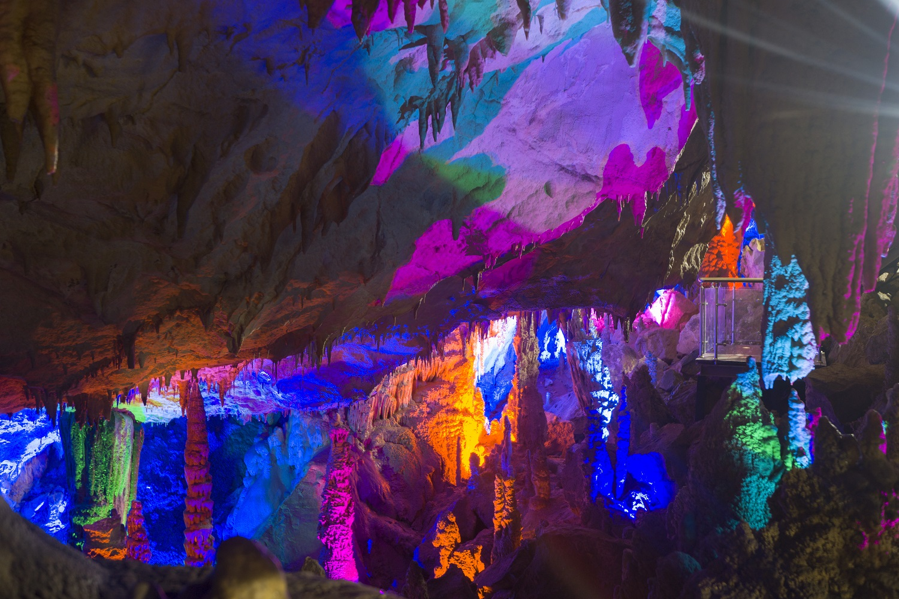
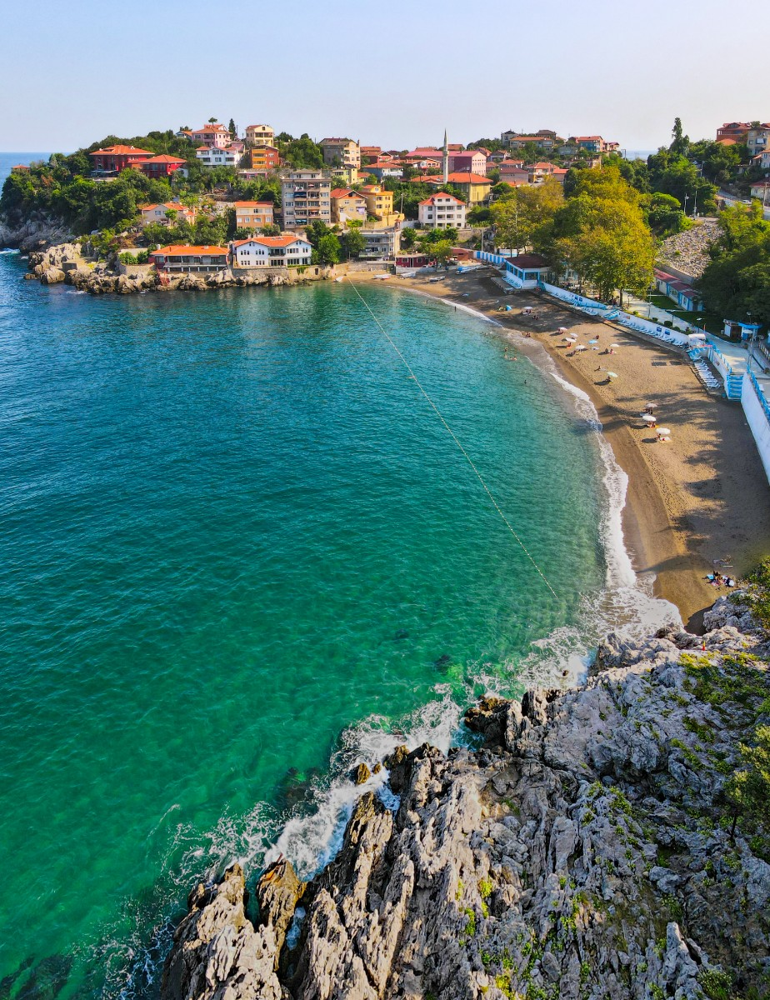

Top 3 activities to do at Zonguldak

Explore Gökgöl Cave
Discover impressive rock formations and beautiful underground scenery in one of Zonguldak's natural attractions.

Relax at Kapuz Beach
Enjoy the Black Sea, take a swim and spend a relaxing day by the coast.
Visit Filyos
Enjoy beautiful sea views, sandy beaches and a peaceful atmosphere in this coastal town.